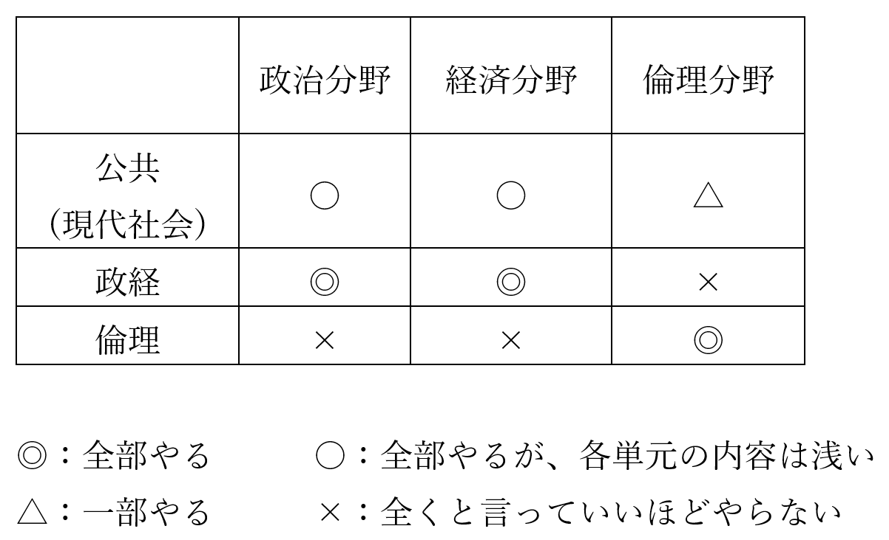

雨坂先生の復習用資料集
当サイトでは、文系教員VTuber雨坂先生の、授業の復習用資料を掲載しています。
資料は徐々に増えていく予定です。
授業を掲載しているyoutubeチャンネルはこちら
復習用資料及び動画一覧
| 資料 | 動画 |
|---|---|
| 英語／中学復習講座 | 動画一覧 |
| 高校社会科／公民ガイダンス | 公民ガイダンス動画 |
| 高校社会科／公民／政治分野 | 動画一覧 |
| 高校社会科／公民／経済分野 | 動画一覧 |
| 高校社会科／公民／倫理分野 |
高校公民の分野について
・高校の公民は、政経、現代社会、倫理、それに公共と色々な授業があります
・これ、どうなってるかと言うと、こう↓なってます

・↑の表の内容は勿論、大学受験でも同じです
・詳しくは高校社会科／公民ガイダンスをどうぞ